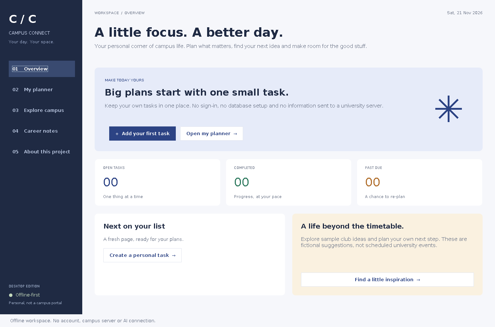

Less in your head.
More on your list.
Create tasks, set a date, add notes and tick things off. Find what matters with search and status filters.
Your personal corner of campus life. A quiet place to plan what matters, find your next idea and make room for the good stuff.
A real Java Swing desktop app. This page is its showcase, not a browser version.
01 / YOUR PERSONAL WORKSPACE
No sign-in. No campus server.
Create tasks, set a date, add notes and tick things off. Find what matters with search and status filters.
Real local JSON storage, exportable backups and protection against damaged files or conflicting windows. No account needed.
Fictional campus ideas and simple career reflections. No invented statistics, official events or AI claims.
02 / MAKE A LITTLE SPACE
Install Java 21 or later, download the JAR and run it on your desktop. Or build it yourself from the source.
Download desktop JAR ↓Requires a graphical desktop and Java 21+. Not a signed native installer.
git clone https://github.com/anjalid24/Campus_Connect.git
cd Campus_Connect
mvn clean verify
java -jar target/campus-connect-1.0.0.jarJDK 21+ · Maven 3.9+ · No database needed